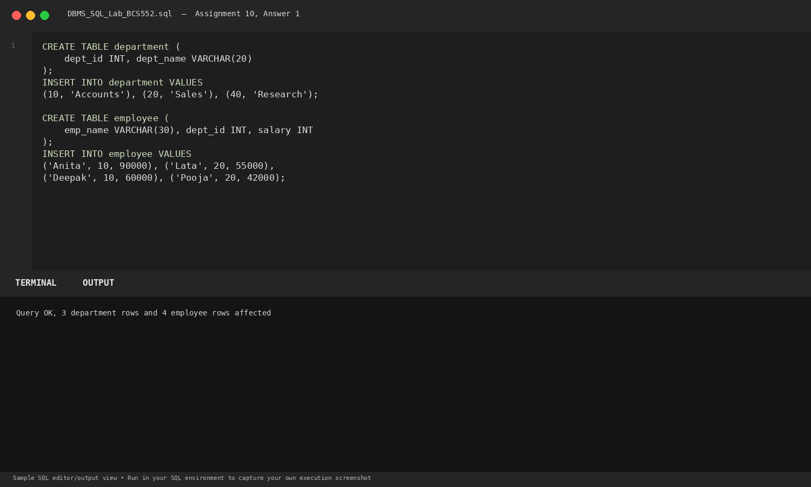
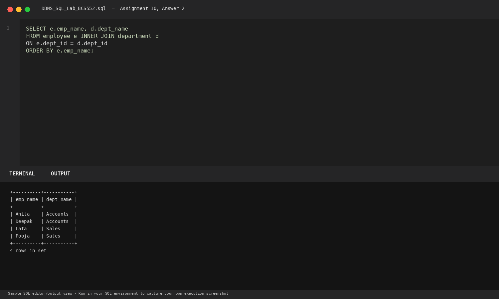
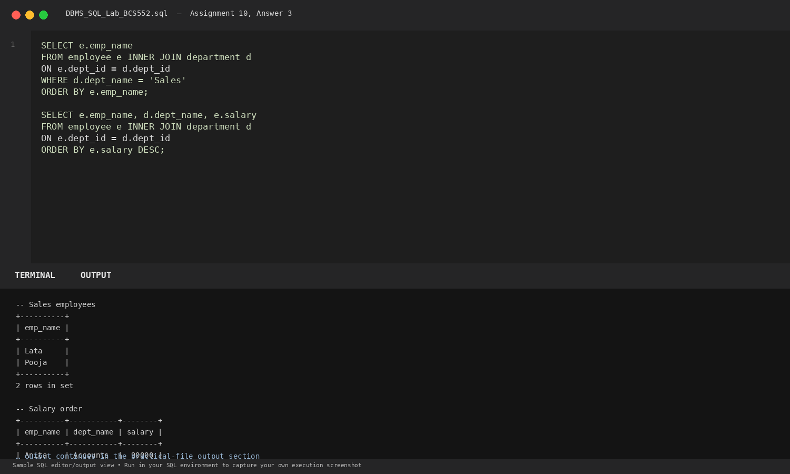

Task 1
Set up department and employee tables
SQL Query
CREATE TABLE department (
dept_id INT, dept_name VARCHAR(20)
);
INSERT INTO department VALUES
(10, 'Accounts'), (20, 'Sales'), (40, 'Research');
CREATE TABLE employee (
emp_name VARCHAR(30), dept_id INT, salary INT
);
INSERT INTO employee VALUES
('Anita', 10, 90000), ('Lata', 20, 55000),
('Deepak', 10, 60000), ('Pooja', 20, 42000);Database Output
Query OK, 3 department rows and 4 employee rows affected
Explanation: Creates normalized department and employee tables linked by dept_id.
Terminal Screenshot Preview

Task 2
Join employee names with department names
SQL Query
SELECT e.emp_name, d.dept_name
FROM employee e INNER JOIN department d
ON e.dept_id = d.dept_id
ORDER BY e.emp_name;Database Output
+----------+-----------+ | emp_name | dept_name | +----------+-----------+ | Anita | Accounts | | Deepak | Accounts | | Lata | Sales | | Pooja | Sales | +----------+-----------+ 4 rows in set
Explanation: Combines records from both relations where e.dept_id matches d.dept_id.
Terminal Screenshot Preview

Task 3
Filter Sales employees and sort by salary
SQL Query
SELECT e.emp_name
FROM employee e INNER JOIN department d
ON e.dept_id = d.dept_id
WHERE d.dept_name = 'Sales'
ORDER BY e.emp_name;
SELECT e.emp_name, d.dept_name, e.salary
FROM employee e INNER JOIN department d
ON e.dept_id = d.dept_id
ORDER BY e.salary DESC;Database Output
-- Sales employees +----------+ | emp_name | +----------+ | Lata | | Pooja | +----------+ 2 rows in set -- Salary order +----------+-----------+--------+ | emp_name | dept_name | salary | +----------+-----------+--------+ | Anita | Accounts | 90000 | | Deepak | Accounts | 60000 | | Lata | Sales | 55000 | | Pooja | Sales | 42000 | +----------+-----------+--------+ 4 rows in set
Explanation: Applies WHERE filters on joined attributes and sorts records descending by salary.
Terminal Screenshot Preview
